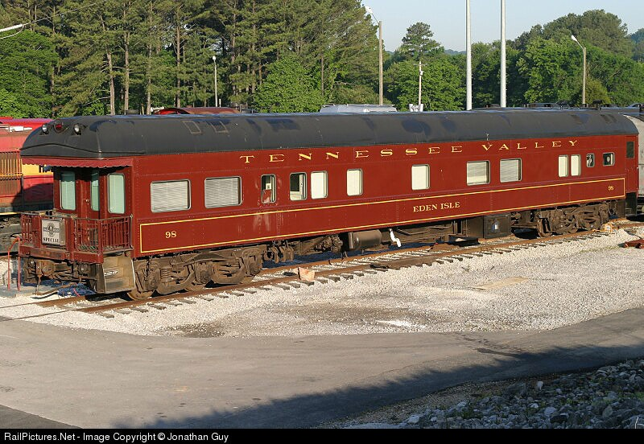

Presidential Observation: The Eden Isle
Built 1917 Baltimore & Ohio Railroad | TNVR 98
TVRM car 98, the "Eden Isle", is a beautifully restored private railcar offering a luxurious experience for Tennessee Valley Railroad guests. Originally built in 1917 for the Baltimore and Ohio Railroad, this elegant car features classic wood-paneled interiors, plush seating, and exquisite detailing that transports passengers to the golden age of rail travel. The 98 was given the name "Eden Isle" in the 1970s once painted into the now iconic Tennessee Valley paint scheme. The car joined TNVR's diner car "Travelers Fare" in excursion service until 2019 when an extensive overhaul occured. The car returned in 2024 sporting an original B&O blue and gray scheme. Used for special events and private charters, the Eden Isle provides an exclusive and comfortable journey for those looking to experience historic railroading in style. This car is particularly special to me as it brought up the rear of my parent's wedding reception train, "The Freer Flyer", in 1992.